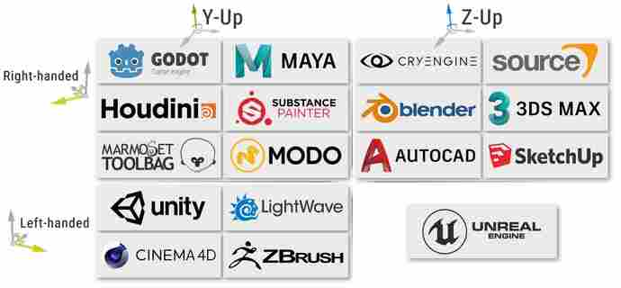
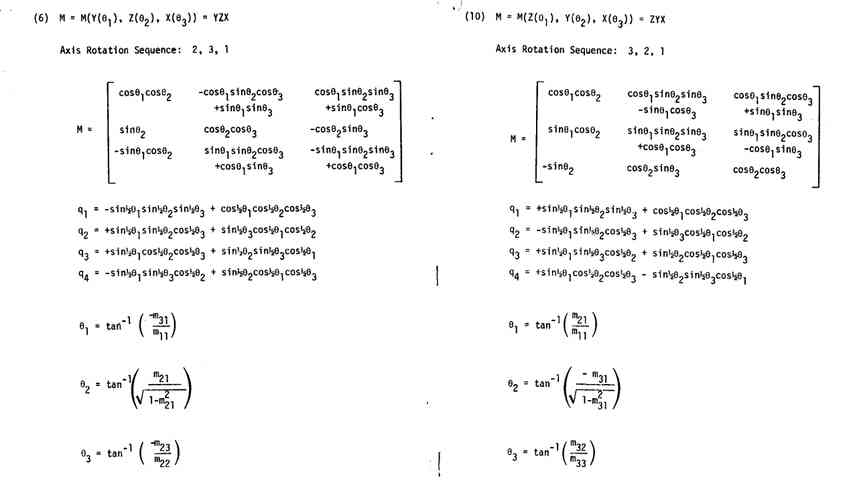

Having worked with linear algebra and math in 3D spaces for years now, I think it could be valuable to share some things that I've learned and some common sources of confusion when it comes to working in 3D spaces. At the very least, I can provide some insight into working with 3D maths as a game or game engine developer.
Algebra is relative to rules that we establish. When doing computations in 3D spaces, the following are some of things we must decide a rule for:
These standards/rules are important for our mathematic calculations as well as our interpretation of the calculation results. We must choose how to interpret the X Y Z values when visualizing a 3D space. Which of these axes is up? If we choose Y to be the up/down axis, is +Y the up direction or -Y? The order of rotation is critical for Euler angles. A rotation applied in the order X Y Z (i.e. rotation around X axis, then rotation around Y axis, then rotation around Z axis) will yield a different orientation from a rotation applied in order Z X Y.
So we must decide on a standard. The choices we make for these standards are arbitrary (although some standards work better for some applications) as long as we are consistent about it. Consistency is the most important thing. It doesn't matter whether we choose XZY order or YXZ order as long as we pick one and stick with it. You must be extremely careful to follow the standards/rules that you have established. Not being consistent can lead to bugs that are extremely difficult to track down. As an engineer who designs game engines, it is essential to decide upon and enforce these standards.
It's unfortunate that different sources/authors use different standards - this is a huge source of confusion. Unity, the most used game engine in the world, uses the Z-axis as their forward/backward axis, the Y-axis as their up/down axis, and the X-axis as their right/left axis, with the positive directions being forward, up, right respectively. Unreal Engine uses X for forward/backward, Z for up/down, and Y for right/left. Blender uses the same axes as Unreal, but uses the positive Y direction as left instead of right (right-handed vs left-handed). Blender uses the right-hand rule for all rotations while Unreal uses the right-hand rule for X and Y rotations but uses the left-hand rule for Z rotations (rotation handedness is not tied to the coordinate system's handedness).

However, these inconsistencies are trivial compared to what I believe is the biggest headache when it comes to different authors using different standards: order of rotations.
Euler angles are horrible. To be fair, the different ways of encoding rotation/orientation information have their strengths and weaknesses. I'll probably use "rotation" and "orientation" interchangeably but there is a subtle difference. The difference is that orientation is a rotation applied to some direction vector (most commonly the forward vector - whatever the standard chooses that to be). In other words, you can think of orientations as rotations relative to some direction vector. The two other common alternatives for representing rotations are matrices and quaternions. Both have their uses, but both are difficult to work with on the human level. Euler angles encode orientation as a series of rotations around the X Y Z axes - this is very easy to conceptualize and it's in a human-readable format. In practice, matrices and quaternions may as well be magic boxes into which we have zero insight. Euler angles are objectively the easiest to work with, and that's why Unity's Editor interface uses Euler angles even though internally these Euler angles are converted to quaternions.
Euler angles have many issues (e.g. gimbal lock, not being able to transform vectors, not being able to map a vector or point from one coordinate space to another, etc.), but one of the most annoying is that order of rotation matters. Rotation order XYZ can yield a different orientation from orders XZY, ZXY, YZX, YXZ, ZYX.
Let's say that we are using rotation order XZY, meaning we apply rotation around X first, rotation around Z second, and rotation around Y last. We apply the X rotation first, which means that the X rotation is subject to the subsequent rotations. When we apply the Z rotation, we have already applied the X rotation, which means the initial X rotation we defined is actually defined in the context of that Z rotation. Finally, when we apply the Y rotation, we are affecting both the Z rotation and X rotation that came before it. This inherently creates a hiearchy of rotations, where Y is the highest level and X is the lowest (i.e. Y -> Z -> X). Notice if we write the order of rotations from highest in the hiearchy to lowest, then we have YZX which is flipped from XZY. What's annoying is that some authors will write the order of rotation in terms of that hierarchy and some will write them in terms of the actual order of rotations. This means that if you see "XZY" order somewhere, you can't be sure whether that means XZY or YZX without careful examination.
Is this confusing? That's my point. I recommend playing around with different orders of rotations in Blender if you really want to wrap your head around this. The following video may help as well.
Notice how in the video the author says a hiearchy of Y->X->Z creates a rotation order of YXZ when the actual order of applying the rotations is ZXY. In contrast, the Blender documentation on rotations notes that their "XYZ, XZY, YXZ, YZX, ZXY and ZYX Euler rotation modes" are "named using the letters of the axes in order, starting from the axis at the bottom of the hierarchy, and finishing with the one on top."
You could also read these documentation pages for Unity:
- Quaternion.Euler
- QuaternionAndEulerRotationsInUnity
Note how on the Quaternion.Euler page it says "Returns a rotation that rotates z degrees around the z axis, x degrees around the x axis, and y degrees around the y axis; applied in that order." You might think that means Unity uses the ZXY rotation order. You would be mostly right. However, the ZXY rotation order in Unity is not the same as the ZXY rotation order in Blender because Blender uses +X as the positive forward direction while Unity uses +Z. Isn't that infuriating?
These are things you must keep in mind when working with rotations.
Quaternions are difficult to understand. A common joke is that nobody actually understands how they work. But in reality, quaternions are composed of simple properties. There are also many problems that only quaternions can solve (e.g. sphericial interpolation). Also, some problems are just easier with quaternions. For example, I had a spotlight pointing in direction A. I wanted to figure out the amount of rotation I need to apply to that spotlight in order to make it point in direction B. With quaternions, this is trivial. We simply the find the rotation difference between the two orientations of direction A and B (difference = quat B * inverse of quat A). With Euler angles, this is a much more difficult problem because now we are thinking about the rotation difference as a combination of rotations around X Y Z axes.
As mentioned before, Unity uses quaternions for rotations internally, and I believe Unreal does the same. Quaternions are very handy, and you should be using quaternions internally if you are making a game engine. But quaternions are not human-readable/friendly, nor are they GPU-friendly - GLSL and HLSL work with matrices. Therefore, your game engine needs to be able to freely convert between the three different representations. The best possible thing you can have in representation is every representation. It's important to understand the relationships between the quaternion, the transformation (specifically rotation) matrix, and the Euler angles so that you can implement functions to convert between these representations.
Quaternions are used extensively in space shuttles, so NASA did considerable analysis on these relationships. The following are photographs of a NASA report which describes these relationships. Note that the relationship is different depending on the order of rotations. This is another major source of headache. Again, you need to be mindful of the order of rotations.

Whoever wrote this report wrote the order of rotations as the order of hierarchy, not order of application.
That NASA report and the following are good references for these relationships: Euler Angle Formulas
The main application of linear algebra in game development is mapping from one coordinate space to another. For example, the vertices of a 3D model are represented relative to the origin of the 3D model. When the 3D model is placed into a game, we need to know where the vertices of the model are in the game relative to the game world's origin. Therefore, we are mapping from the model coordinate space to the world coordinate space.
This is extremely powerful. It allows us to "convert" a coordinate in model space to world space to camera space to screen space and back easily. If we used matrix A to go from model space to world space, we simply use the inverse matrix of A to go from world space back to model space. Really understanding coordinate spaces and mapping between them is critical to computer graphics and game engine development. It gives you so much power. Converting between these coordinate spaces is at the heart of the graphics pipeline. If you understand the steps we take to map a coordinate in world space to screen space, you can simply reverse those steps to go from screen space to world space. Now, if a player clicks on the screen at pixel x: 300 and y: 500, you know how to map that click in screen space into world space and figure out where in the world the player clicked.
Using mismatched coordinate spaces is another source of confusion and errors in computer graphics and game development. You will have incorrect calculations if the input to your calculations are not all in the space coordinate space.
This is not a comprehensive list of things you should consider when doing 3D math - there are many other things you should know - but I think it gives you an idea of the sort of things to be mindful of when making your own game or game engine. In the future, I will probably return to this blog post to add new sections or flesh out the existing sections.
https://www.techarthub.com/a-guide-to-unitys-coordinate-system-with-practical-examples/
https://en.wikipedia.org/wiki/Conversion_between_quaternions_and_Euler_angles
https://www.euclideanspace.com/maths/geometry/rotations/conversions/eulerToQuaternion/index.htm
https://www.euclideanspace.com/maths/geometry/rotations/conversions/matrixToQuaternion/
https://docs.unity3d.com/Manual/QuaternionAndEulerRotationsInUnity.html
https://docs.unity3d.com/ScriptReference/Quaternion.Euler.html
https://docs.blender.org/manual/en/latest/advanced/appendices/rotations.html
https://www.youtube.com/watch?v=zc8b2Jo7mno&ab_channel=GuerrillaCG